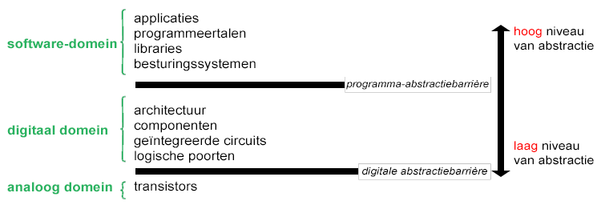

Abstractie Binnen de Computer
In Hoofdstuk 4 Een hiërarchie van open protocollen, zag je dat internetsoftware op verschillende abstractieniveaus is gerangschikt, met applicatieprogramma's (zoals je e-mailprogramma) op het hoogste niveau en netwerkprotocollen zoals WiFi en Ethernet op het laagste niveau. Bedenk dat hogere niveaus dichter bij de dingen zijn die mensen gebruiken en dat lagere niveaus dichter bij de manier zijn waarop machines werken.
Net zoals internet heeft de manier waarop een computer werkt ook abstractieniveaus.
In deze les, ga je leren over de verschillende abstractieniveaus in computersoftware en hardware.
Op deze pagina, ga je leren over de drie groepen (domeinen) van de abstractieniveaus.
Er zijn talloze abstractieniveaus waarmee hoe computers werken. Hier zijn ze georganiseerd in drie overkoepelende domeinen:
Softwaredomein
De programma's die je schrijft en gebruikt zijn software, maar onder deze programma's bevindt zich meer software die hen helpt werken. In deze les kijken we naar vier abstractielagen binnen het softwaredomein:
- applicaties, die je schrijft en ziet;
- programmeertalen, die worden gebruikt om ze te schrijven;
- bibliotheken, die handige functies bevatten waarmee je rommelige details kan verbergen;
- besturingssystemen, die werken met de hardware.
Software is een abstractie : een manier van denken over de computer zonder na te hoeven denken over hoe de computer zelf werkt.

Digitale Domein
In het softwaredomein is elk abstractieniveau een ander stuk software, maar de abstractieniveaus in het digitale domein zijn verschillende manieren om over hetzelfde fysieke object na te denken. Het circuit in een computer is ingewikkeld en om het bouwen mogelijk te maken, denken ingenieurs erover op verschillende abstractieniveaus:
- De architectuur zijn de instructies die software kan verzenden en die de hardware zal begrijpen.
- De computer heeft componenten (zoals geheugen, processors, videokaarten, etc.) die gebruik maken van de architectuur.
- Die componenten zijn opgebouwd uit geïntegreerde circuits (chips) , de zwarte rechthoeken die je op de printplaat rechts kunt zien.
- Die geïntegreerde circuits bestaan weer uit logische poorten , de fundamentele bouwstenen die een soort Boolean functies in het echt zijn.
Analoge Domein
Logische poorten, die het laagste abstractieniveau van het digitale domein zijn, werken met enen en nullen. In de realiteit zijn die logische poorten opgebouwd uit transistors , een soort circuitcomponenten. Transitors zijn niet zoals lichtschakelaars die aan of uit staan. Er kunnen tussenliggende waarden zijn (zoals "slechts 23% aan"), maar dit is niet gewenst. Elektrotechnici moeten dus nadenken over de wetten van de elektronica om digitale schakelingen te ontwerpen zodat er niet zulke tussenliggende waarden uitkomen.
Digitaal en analoog zijn tegengestelden. Digitaal betekent informatie die wordt weergegeven als enen en nullen . Analoog betekent informatie die wordt weergegeven door signalen die continu variëren (dat wil zeggen inclusief tussenliggende waarden).